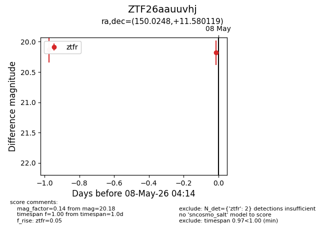
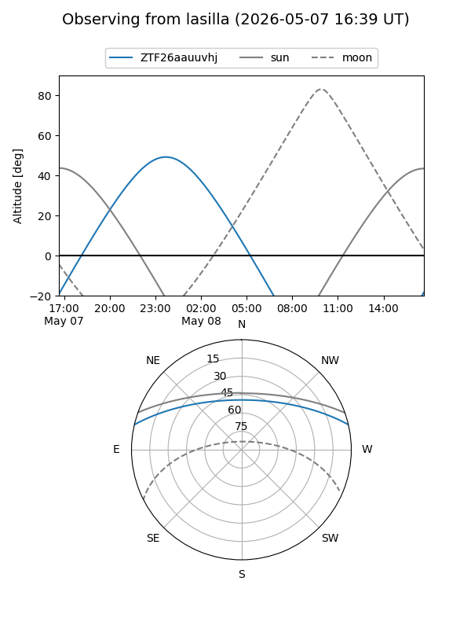
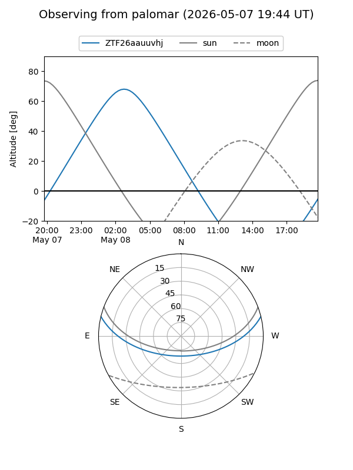
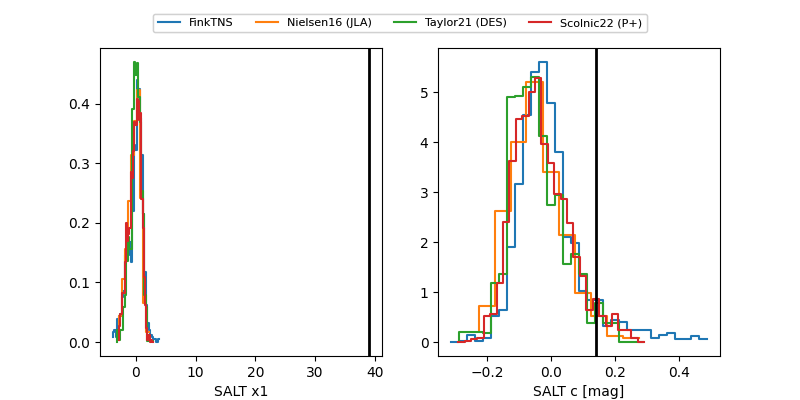

ZTF26aauuvhj
Target ZTF26aauuvhj at 2026-05-08 04:16
Aliases and brokers:
FINK: link
Lasair: link
ALeRCE: link
alt names
ZTF26aauuvhj (ztf,fink_ztf)
Coordinates:
equatorial (ra, dec) = 150.0248,+11.58012
equatorial (HMS+DMS) = 10:00:05.96,+11:34:48.43
galactic (l, b) = (225.5353,+46.96136)
Flags:
Photometry:
last ztfr=20.18
2 ztfr detections
Lightcurve

Visibility


Additional plots
